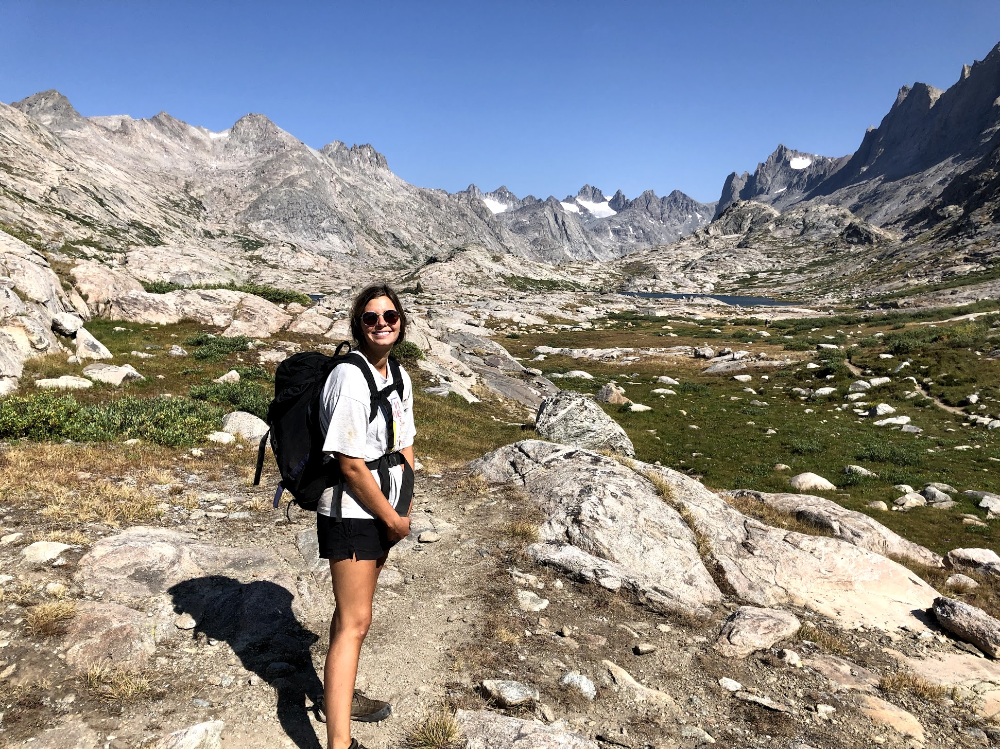
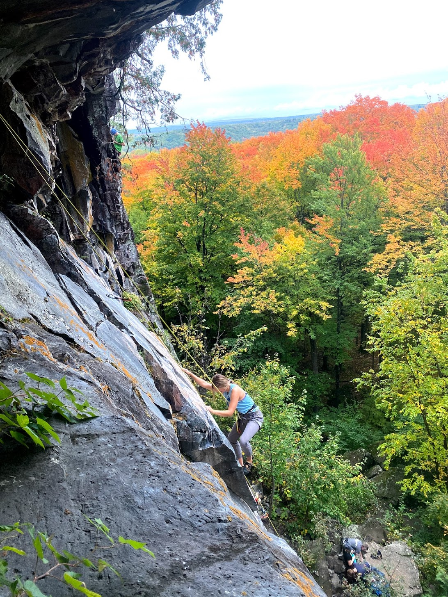

Hi, I'm Ashley!
I'm a cartographer, paleoecologist, and environmental sociologist.
I make maps that pertain to the environmental crisis, and how it affects society.
When I'm not making maps I am climbing, hiking, or canoeing.
I'm recenttly graduatted from University of Wisconsin-Madison.
I'm always ready to learn something new! You can contact me at acofrin@wisc.edu or through any of the links at the bottom of this page.


